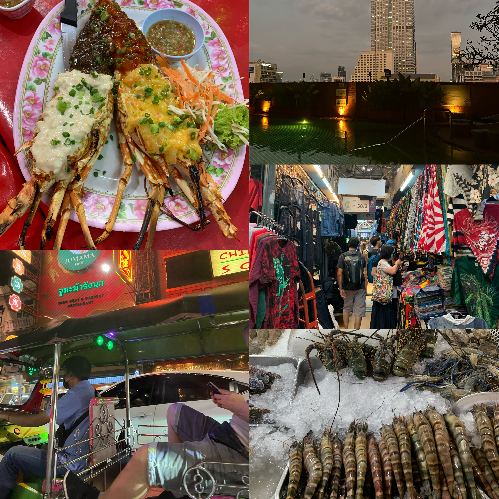
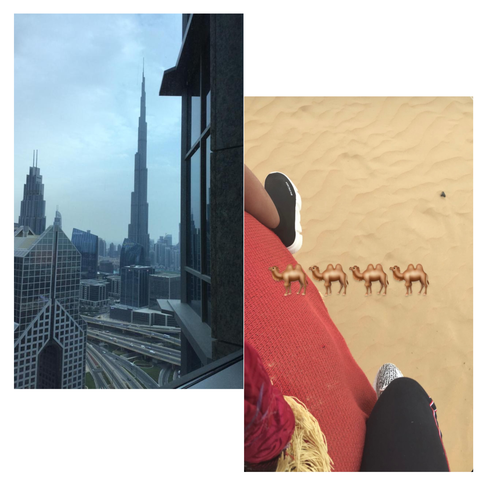
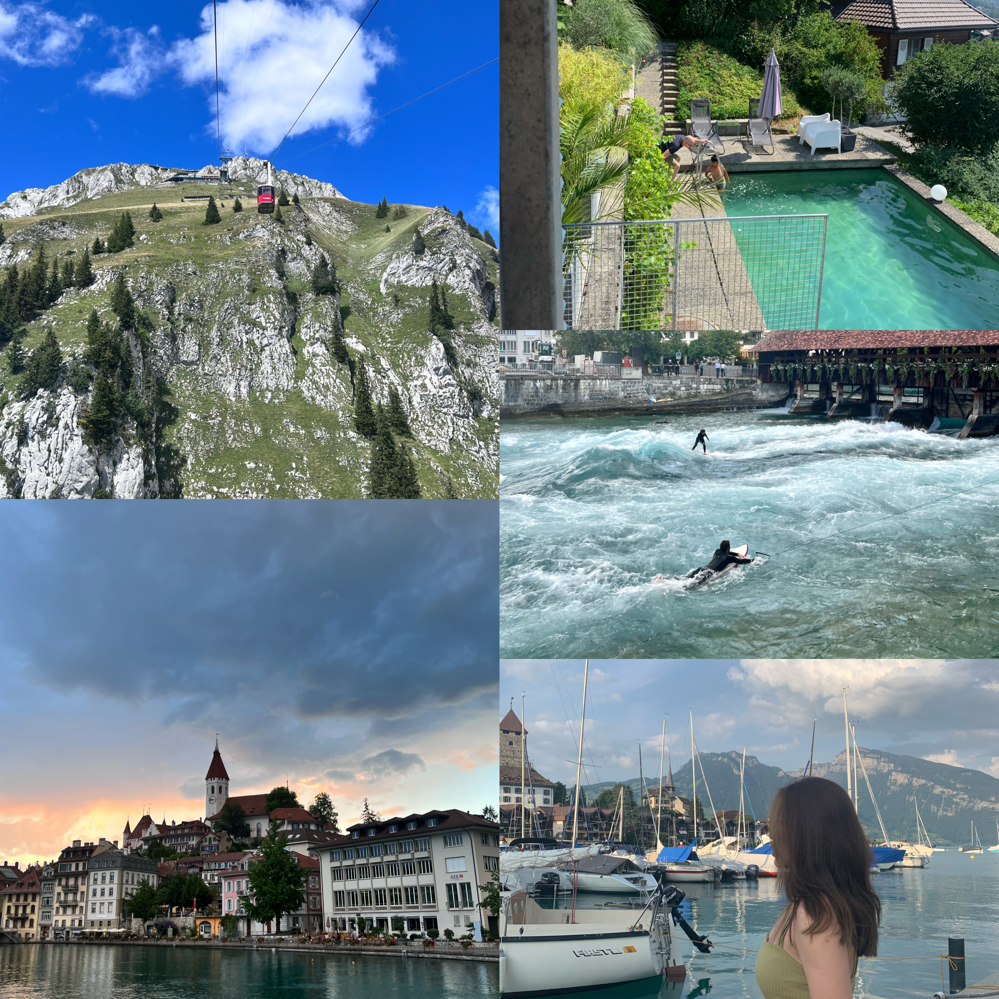
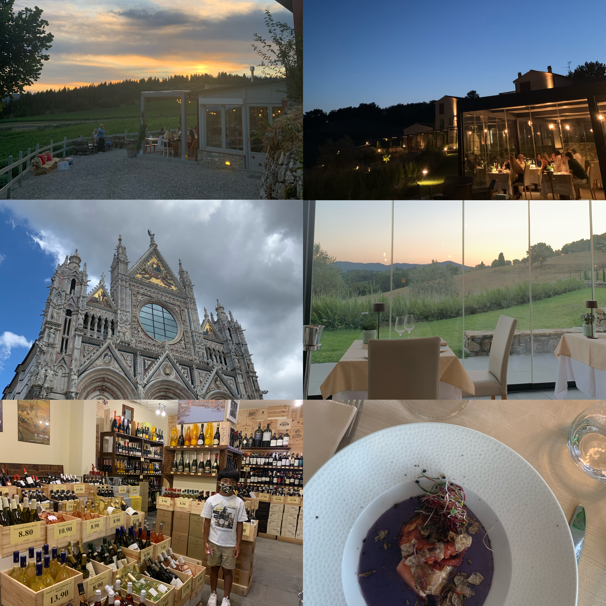
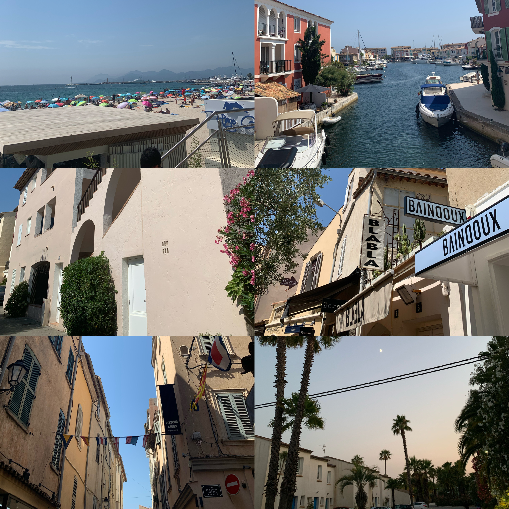
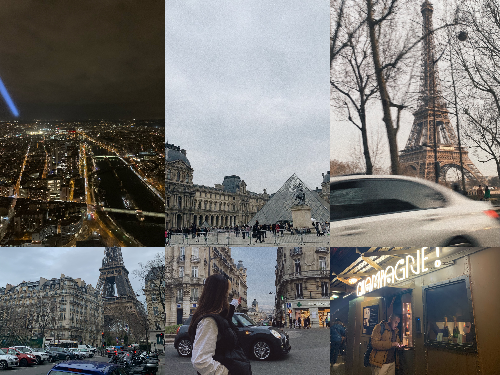
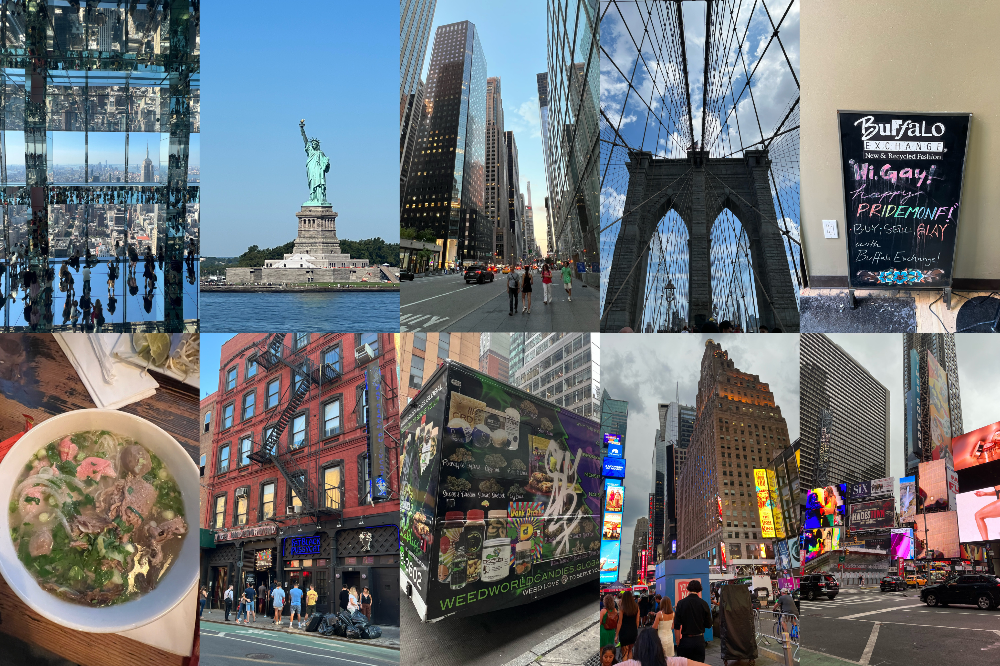

Mijn vakanties naar Vietnam zijn altijd speciaal omdat dit land niet alleen een bestemming is, maar ook waar ik vandaan kom en waar mijn familie wonen. Hier ben ik geboren, vandaar ga ik bijna elke jaar naar Vietnam op vakantie. Elke reis naar Vietnam voelt als een reis naar huis, een kans om de warmte en liefde van mijn familie te ervaren en de banden met mijn geboorteland te versterken. Vietnam is niet zomaar een plek voor mij; het is een deel van wie ik ben.
Vietnam

Thailand
Thailand heeft een speciaal plekje in mijn hart als vakantiebestemming. Het eten daar is heerlijk, de lokale bevolking is ongelooflijk gastvrij, en de diverse landschappen zijn super mooi. Wat het nog beter maakt, is dat Thailand ook budgetvriendelijk is. Maar het belangrijkste is dat mijn familie er net zo van geniet als ik, en daarom keren we bijna elk jaar terug naar dit prachtige land.
Dubai
Ik houd van Dubai, ondanks de ongelukkige ervaring die mijn broertje had. Zijn voedselvergiftiging en het verblijf van twee dagen in het ziekenhuis waren zeker niet leuk. Ik was daar maar voor 1 week, Dubai heeft zoveel te bieden dat ik er telkens weer naartoe ga. Mooie en hele luxe hotel waar we bleven maar hoogtepunten voor ons waren het grootste waterpark ter wereld en de woestijnavonturen. We genoten van spannende glijbanen, verfrissende zwembaden en een onvergetelijke tijd in het waterpark. Die rit in die gekke woestijnauto was echt een hoogtepunt en maakte de reis onvergetelijk. Ik zou wel nog een keer terug willen naar Dubai.
Zwitserland
Zwitserland is voor mij een speciale vakantiebestemming, en dat komt niet alleen door de mooie landschappen en prachtige steden. Omdat mijn tante hier woont, elk jaar breng ik er minstens één keer een bezoek aan haar. Het is niet alleen een kans om de adembenemende Zwitserse Alpen te verkennen of te genieten van heerlijke Zwitserse chocolade, maar ook een gelegenheid om weer in contact te komen met familie en bijzondere herinneringen te creëren.
Italie
Italië is voor mij een favoriete vakantiebestemming, daar heb ik veel vrienden ontmoet. Het land staat bekend om zijn warme gastvrijheid en vriendelijke mensen. Heerlijk eten in Italië, prachtige steden en de rijke geschiedenis ervaren, maakt elke reis naar Italië een onvergetelijke ervaring. Het is een plek waar vriendschap en de Italiaanse levensstijl samenkomen voor de perfecte vakantie.
Frankrijk
 Ik ben maar 2 keer in andere steden van Frankrijk geweest, vooral Parijs ben ik vaak geweest en het heeft mijn hart gestolen. De stad van de liefde heeft een onweerstaanbare charme die me keer op keer terugbrengt. Van de Eiffeltoren tot de romantische Seine en de kunstschatten in het Louvre, Parijs biedt een ongeëvenaarde culturele rijkdom. Maar het is niet alleen de bezienswaardigheden die me aantrekken; het is de sfeer, de heerlijke Franse keuken en de levendige straten.
New York
New York heeft iets echt magisch. Elke keer als ik de straten van deze stad betreed, raak ik geïnspireerd door de energie, diversiteit en eindeloze mogelijkheden die het te bieden heeft. Mijn bezoeken aan The Big Apple store en bij de iconische plekken, zoals Times Square en de Empire State Building waren zo onvergetelijk dat ik op een gegeven moment niet meer naar huis wilde. De skyline, de musea, de culinaire scene en het gevoel van vrijheid hebben mijn hart gestolen. New York is niet alleen een plek om te bezoeken; het is een plek waar ik altijd zou willen wonen als ik de kans kreeg.